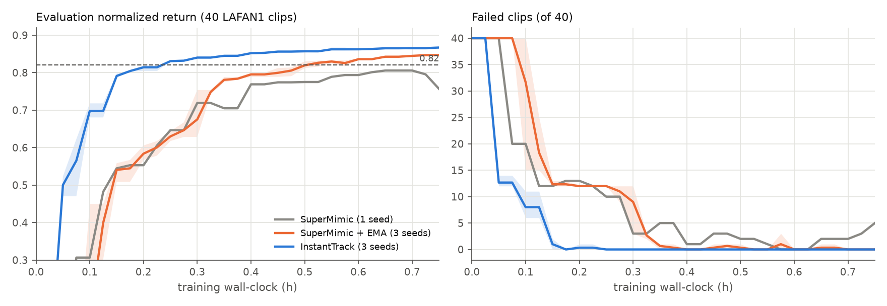

InstantTrack
All 40 motions.
15 minutes. One GPU.
One whole-body tracking policy for the Unitree G1, trained on every LAFAN1 clip with a differentiable world model in 0.25 h on a single RTX 5090. That is 2.2× faster than SuperMimic with EMA and 6× faster than SuperMimic on the same machine, simulator and evaluator, with cleaner foot contact.
A policy trained for 15 minutes, 0/40 clips failed.Solid robot: InstantTrack in MuJoCo Warp. Blue ghost: the LAFAN1 reference.
Time to target
Same target, a quarter of an hour.
Hours of training until the policy reaches normalized return ≥ 0.82 with 0 of 40 clips failed, held for 3 consecutive checkpoints. Everything runs on one RTX 5090 and shares the same simulator, MDP and evaluator.
Same 15 minutes of training
At 0.25 h, one is done. The other still falls.
After 0.25 h, SuperMimic + EMA still fails 9 of 40 clips, most of them fall-and-get-up motions. InstantTrack fails none. Left: SuperMimic + EMA. Right: InstantTrack. Same seed, same clips, same moment.
| mean over seeds: return / failed clips | 0.15 h | 0.25 h | 0.50 h | 0.75 h |
|---|---|---|---|---|
| SuperMimic (1 seed) | 0.545 / 12 | 0.646 / 10 | 0.775 / 2 | 0.757 / 5 |
| SuperMimic + EMA | 0.540 / 12.3 | 0.630 / 12.0 | 0.819 / 0.3 | 0.847 / 0.0 |
| InstantTrack | 0.791 / 1.0 | 0.831 / 0.0 | 0.857 / 0.0 | 0.867 / 0.0 |

How it works
SuperMimic's world model, a training loop built for the GPU.
The base is SuperMimic: a differentiable world model predicts the robot's next state, and the policy is trained by backpropagating the imagined return through 32 world-model steps, with a critic. InstantTrack keeps that algorithm and adds changes in three groups: systems in the spirit of InstantMimic, training, and contact. Each is one flag.
Fused 3×3 rotations
The rotation products in kinematics, reward, observation and world model are written element-wise, so torch.compile fuses them. They no longer go to cuBLAS as about 57 ms of batched GEMVs per iteration.
Compile the whole step
Reward, termination, observation, goal and normalizer inputs are compiled as well, taking an iteration from 25.3k to 15.2k kernel launches.
No host syncs
Fixed-size sampling and on-GPU guards remove every CPU↔GPU synchronization inside an iteration. Adam, GAE and the critic loss are fused or compiled.
EMA policy
A Polyak average of the policy weights is what we checkpoint and deploy. On its own this cuts SuperMimic from 1.50 h to 0.55 h, so we count it as part of the baseline.
A right-sized world model
A 1024³ world model learns as fast per iteration as the paper's 2048³ for 40 clips, and it runs much faster. A higher learning rate with fewer world-model batches converges in fewer iterations.
Failure-focused resets
A per-second termination rate tracks where episodes fail. 30% of resets start one second before those points, so a hard clip such as fall-and-get-up is not forgotten between checkpoints.
A contact reward, in imagination only
A differentiable foot-contact indicator is matched to the reference contact state, and foot sliding is penalized while the reference foot is down. Evaluation keeps SuperMimic's reward unchanged.
Tracking accuracy and contact
Faster, and it tracks better.
All 40 clips are run once from their first frame, with no randomization and a deterministic policy. The table shows the mean ± std over 3 seeds after 0.75 h of training. Body errors use the 14 tracked bodies. Contact agreement is the fraction of foot-frames whose contact state matches the reference.
| after 0.75 h | return ↑ | body pos (cm) ↓ | body ori (°) ↓ | joints (°) ↓ | contact agreement ↑ | foot slip (cm/s) ↓ | penetration (mm) ↓ | root drift (cm) ↓ |
|---|---|---|---|---|---|---|---|---|
| SuperMimic (1 seed) | 0.775 | 5.29 | 12.5 | 6.15 | 0.727 | 8.44 | 0.066 | 116 |
| SuperMimic + EMA | 0.852 ± 0.002 | 4.60 ± 0.03 | 11.1 ± 0.2 | 5.61 ± 0.05 | 0.719 ± 0.001 | 8.00 ± 0.06 | 0.063 ± 0.003 | 54 ± 1 |
| InstantTrack, no contact reward | 0.873 ± 0.001 | 3.50 ± 0.08 | 7.7 ± 0.3 | 4.15 ± 0.02 | 0.738 ± 0.002 | 7.73 ± 0.08 | 0.057 ± 0.001 | 58 ± 3 |
| InstantTrack | 0.867 ± 0.001 | 3.53 ± 0.04 | 7.5 ± 0.1 | 4.56 ± 0.02 | 0.812 ± 0.000 | 6.62 ± 0.04 | 0.052 ± 0.001 | 61 ± 5 |
At 1.5 h (seed 0): SuperMimic + EMA reaches return 0.880, body pos 3.83 cm, ori 9.2°, contact agreement 0.733, slip 7.78 cm/s, root drift 49 cm. InstantTrack reaches 0.877, 3.27 cm, 6.4°, 0.829, 6.48 cm/s and 62 cm. Without the contact reward InstantTrack reaches 0.890 and 3.03 cm. The reference motion itself slips 10.2 cm/s.
After 1.5 h both methods track every clip. Left: SuperMimic + EMA. Right: InstantTrack. The difference is centimetres and degrees; look at the feet during jumps and sprints.
Ablation ladder
Where the time goes.
Each row adds one change to the row above. Times are held ×3 at 0.82 with 0 failed clips.
| configuration | seeds | held at (h) | mean (h) | it/s |
|---|---|---|---|---|
| SuperMimic (paper hyperparameters) | 1 | 1.50 | 1.50 | 3.05 |
| + EMA policy | 3 | 0.50 / 0.54 / 0.60 | 0.55 | 3.08 |
| + lr 4e-4, 5 WM batches, no host syncs, fused Adam | 3 | 0.29 / 0.30 / 0.35 | 0.31 | 3.51 |
| + fused 3×3 rotations | 1 | 0.30 | 0.30 | 4.14 |
| + compiled reward / obs / goal | 3 | 0.25 / 0.25 / 0.49 | 0.33 | 4.88 |
| + world model 1024³ | 3 | 0.30 / 0.20 / 0.30 | 0.27 | 6.35 |
| + failure-focused resets | 3 | 0.20 / 0.20 / 0.25 | 0.22 | 6.29 |
| + contact reward = InstantTrack | 3 | 0.25 / 0.25 / 0.25 | 0.25 | 6.32 |
The contact reward costs about 0.03 h. In exchange, contact agreement rises from 0.74 to 0.81 and foot slip falls 15%. The preset instanttrack_track leaves it out.
What we tried that did not help
- Smaller policy and world model (1024-512-256): 1.20 h.
- DiffMimic-style demonstration replay, on top of EMA: 0.59 h.
- Policy batch 2048: 0.55 h. EMA 0.999: 0.55 h. lr 6e-4: 0.40 h. 3 WM batches: 0.45 h.
- Horizon 24: 0.30 h. Horizon 16: 7.0 it/s but a lower return ceiling, 0.30 h.
- PhysMamba-style foot-contact world-model loss: 0.34–0.35 h. Anchored imagination (on-policy corrections): parity at 0.31 h.
- 2 critic epochs: 0.40 h. UTD 0.5: 0.40 h. WM window 4: parity.
- CUDA graphs via
torch.compile(mode="reduce-overhead"): +3% it/s, same kernel count, parity. - Contact-mode world model, with 4 heads mixed by predicted foot contact: parity on time and on contact metrics, 3 seeds.
- Contact reward 0.5: contact agreement 0.87–0.88, but held at 0.25–0.35 h with more pose error and root drift.
Every run's flags, training log and evaluation log are published in results/runs.
How to read these numbers
What we claim, and what we don't.
- The baseline is our reimplementation. No official SuperMimic code is released. Our SuperMimic is the mjlab port of supermimic_vibed, an independent reimplementation. The SuperMimic paper reports ~1.2 h to 0.82 on an H100. We measure 1.50 h on an RTX 5090 under a stricter criterion. The speed-up is InstantTrack against our SuperMimic on the same machine, not against the paper's numbers.
- EMA does a lot of the work. EMA alone is 2.7× on SuperMimic, which is why we quote 2.2× against SuperMimic + EMA.
- Seeds and resolution. We ran 3 seeds per method, but only 1 for plain SuperMimic. Checkpoints come every 3 minutes, so times are quantized to 0.05 h, and GPU runs are not bit-reproducible.
- Wall-clock. Time is training on an otherwise idle GPU. It includes compile warm-up and checkpoint writing, and it excludes offline evaluation.
- Where InstantTrack is worse. With the contact reward, return at 1.5 h is 0.877 against 0.880, and global root drift is larger: feet that stick do not slide along with the reference's own 10.2 cm/s of slip.
- Scope. These results cover the Unitree G1 in simulation and LAFAN1's 40 clips. There are no evaluation-time pushes or randomization, and no hardware experiment.
Get started
Train your own in 15 minutes.
You need Linux, an NVIDIA GPU with CUDA 12.8 drivers and uv. The script downloads the G1 retargets of LAFAN1 for you. The README has every flag, preset and reproduction script.
git clone https://github.com/Huy-Quang-Dao/instantTrack.git cd instantTrack uv sync tools/download_data.sh uv run python tools/test_env.py # InstantTrack, 0.75 h, then evaluate every checkpoint scripts/train.sh instanttrack it_s0 --seed 0 --max_hours 0.75 # the fair baseline scripts/train.sh supermimic_ema sm_ema_s0 --seed 0 --max_hours 0.75
Credits
Built on the work of others.
- Method. Q. Liao, Y. Shao, J. Long, K. Zakka, R. Horowitz, P. Abbeel, K. Sreenath. SuperMimic: Scaling Humanoid Whole-Body Control with One Differentiable World Model, 2026 (project page). InstantTrack is independent work, not affiliated with or endorsed by the authors.
- Code base. supermimic_vibed by Chong Zhang (ETH Zurich), MIT License.
- Training-loop engineering. I. Choi, G. Leem, J. Won. InstantMimic: A High Performance System for Learning Physics-based Skills in Seconds, 2026.
- Simulation. mjlab (Zakka et al., arXiv:2601.22074), MuJoCo (Todorov et al., 2012), MuJoCo Warp, NVIDIA Warp, PyTorch.
- Data. LAFAN1 by Ubisoft La Forge: F. G. Harvey, M. Yurick, D. Nowrouzezahrai, C. Pal, Robust Motion In-betweening, SIGGRAPH 2020, CC BY-NC-ND 4.0. G1 retargets and robot description by Unitree (BSD-3-Clause).
- Related work. SuperTrack (Fussell et al., 2021), BeyondMimic (Liao et al., 2026), SHAC (Xu et al., 2022), DiffMimic (Ren et al., 2023), Suh et al. (2022), PhysMamba (Zhang & Todorovic, 2026).
@misc{instanttrack2026,
title = {InstantTrack: Whole-Body Motion Tracking for the Unitree G1 in 15 Minutes on One GPU},
author = {Huy-Quang-Dao},
year = {2026},
url = {https://github.com/Huy-Quang-Dao/instantTrack}
}
Please also cite SuperMimic, InstantMimic, mjlab and LAFAN1. BibTeX entries for all of them are in the README.